The feel
PS1 horror looks like a picture the console can barely hold together. Breogán Hackett, who started Haunted PS1, finds it unnerving that nothing is quite well defined: vertices jitter and textures warp until the game seems to be falling apart.1 Adam Vian of SFB Games says the era could show people without being photorealistic, which leaves the imagination work to do, and that for horror "it's all about leaving that gap".2
The dread comes from what the game withholds. Frédérick Raynal designed Alone in the Dark so that players would be more scared of what they don't see than of what they do,3 and Silent Hill warns of monsters with static on a pocket radio before they come into view.4 Against all that stands the save room, where, as Vian puts it, you can rest, reflect and calm down for a moment.2
- fog-bound
- cramped
- shivering
- unreliable
- low-res
- save-room quiet
Where it comes from
Alone in the Dark (1992) put animated 3D characters over hand-drawn backgrounds, shown from scripted camera angles and moved with character-relative controls.3 Capcom's Resident Evil (1996) took that blend to the PlayStation,5 and Capcom's marketing gave the genre its name, survival horror.3 Konami's Silent Hill (1999) drew its town in real time, and the short view that the console allowed became part of its fear.3,4 Indie developers later revived the look: Puppet Combo made slashers with tank controls and low-poly, VHS-style visuals,6 Haunted PS1 grew from a small group of developers in March 2018,1 and SFB Games' Crow Country (2024) is a classic-style survival horror game inspired by the PlayStation era.2
Core elements
Vertex snapping
The GPU takes vertex positions in whole pixels and has no sub-pixel precision, so every corner snaps to the pixel grid and jumps as things move.7,8 The missing floating-point unit that often gets the blame is not the main cause.8 Crista Castro of Cozy Game Pals says the wobble is just enough to make you think something is there.9
Affine texture warping
Textures are mapped in screen space with no perspective correction, so they bend across polygons that recede from the camera and wobble as things move.7,8 Games split big polygons into smaller ones to reduce the warp, or used plain colours instead of textures.7 Naughty Dog gave Crash textures only for his spots and shoelaces, partly to avoid it.10
Fog and darkness as level design
Silent Hill drew its town in real time on the PlayStation, and the limited range of vision that came with it is part of its fear.4 The fog and darkness may have masked the console's limits, but they made not seeing frightening.3 Director Keiichiro Toyama called the fog "THE visual effect", one that pre-rendered rooms could not have given him.11
Dither and 15-bit colour
The console draws in 15-bit colour, and when it shades a polygon it can dither the 24-bit result down with a fixed 4 by 4 pattern.12 Textures can index palettes of just 16 or 256 colours.12 The educator Gustavo Pezzi counts the dither, visible in almost every frame, as a crucial part of the PS1 look.8
Low resolution and no texture filtering
The standard screen mode was 320 by 240.10 Textures are sampled with nearest neighbour and no filtering, so they look blocky,7 and there are no mipmaps.8 There is no z-buffer either: each polygon is sorted by one average depth, so polygons pop in front of one another as they move.8
Fixed cameras and tank controls
Resident Evil started out fully 3D, but that didn't run well on the PlayStation, so Capcom kept polygon characters, switched to pre-rendered backgrounds and fixed the camera.5 In the first game, memory limited each room to eight camera cuts.13 Movement uses character-relative "tank" controls, which Alone in the Dark used to cope with its scripted camera angles.3
How to do it
Render at low resolution
Render at 320 by 240, the PlayStation's standard mode.10 Draw the game into a 320 by 240 image and stretch that to the window, scaling by whole numbers only so the pixels stay even.14 Sample it with the nearest pixel rather than a smooth filter, which keeps it pixelated when scaled.15
Model to the console's budget
For scale, Naughty Dog kept Crash to 512 polygons and allowed no more than 800 in view at once in the first game.10 Still, add edge loops to big flat areas to smooth out texture distortion; PS1 levels often had more polygons than you might expect.16 Light with vertex colours, the way the console's Gouraud shading gave each vertex its own light level and blended between them.7
Paint small, indexed textures
Polygons can't use textures larger than 256 by 256, and a texture with a 256 or 16 colour palette takes a half or a quarter of the video memory of direct colour.12 In 16-colour mode the texture cache holds 64 by 64 texels, so textures laid out to that size draw faster.12 Keep textures as small as you can, with filtering and mipmaps off.16
Add vertex snapping and affine warp
The jitter comes from vertices rounded to whole pixels.8 One open-source PSX demo recreates it in the vertex shader: divide the clip-space position by w, snap x and y down to steps of 1/160 and 1/120, and multiply by w again. It then divides the final position by its w to discard depth, which leaves the textures affine.17
Add fog and darkness
In Silent Hill, fog and darkness may have masked what the PlayStation couldn't draw, but they made the unknown frightening.3 Its director counted the fog, the darkness and a camera running across the town among the things pre-rendered rooms could not have done.11 Indoors, let darkness take over and make the player's light a risk: in Silent Hill, enemies see you less when it is off.11
Budget the camera cuts
In Resident Evil the fixed cameras arrived with the pre-rendered backgrounds,5 and memory capped each room at eight camera cuts, sixteen in Resident Evil 2.13 At the console's resolution a corner could look like a dead end, so Hideki Kamiya used a light source or a picture to show that the way goes on.13 Pair fixed cameras with tank controls, as Alone in the Dark did.3 Crow Country offers both: tank controls on the D-pad, modern ones on the stick.2
Add save rooms and warning sounds
Make saving a place in the world: Resident Evil's is a typewriter you use with an ink ribbon, and Resident Evil 7 swapped it for a cassette player.18 Crow Country left out autosave checkpoints, because "the save room loses its power if you're not threatened with losing progress".2 Let enemies be heard before they are seen, like the static on Silent Hill's pocket radio.4
Cheat sheet
- Colour
- 15-bit, with shading dithered down from 24-bit in 4 x 4 blocks12
- Textures
- 256 x 256 at most, 16 or 256 colour palettes12
- Vertices
- Whole pixels, no sub-pixel precision7
- Polygons
- Crash 512; 800 in view at once in Crash 110
- Camera cuts
- 8 per room in Resident Evil, 16 in Resident Evil 213
- Frame rate
- Back In 1995 runs at 20 fps for a sluggish feel9
Do
- Hide the far end of every space in fog or darkness, so the limit turns into fear of the unknown.3
- Light with vertex colours under plain white ambient light, not with detailed texture maps.16
- Keep faces simple. Silent Hill's players can't see faces in play, so its FMV gives a first impression and the imagination does the rest.11
- Give the save room a calm theme of its own, so that reaching it is a relief.18
- Check corners at the final resolution, and mark turns with a light or a picture so they don't read as dead ends.13
Avoid
- Modern lighting, which very easily breaks the illusion of early 3D.16
- Big textured polygons close to the camera. The texture warps across them, so split them with extra edge loops, as PS1 games did.7,16
- Texture filtering and mipmaps. The console sampled the nearest texel and had no mipmaps.7,8
- Autosave checkpoints, which take the power out of the save room.2
- Treating the style as a filter. Puppet Combo calls a VHS filter the easy part and aims for the whole package of the era,6 and Hackett warns that looking like an old game is not enough to sell one.1
Tools and tutorials
- psx-spx
Hardware documentation: the GPU, the GTE, dithering and texture pages.
- godot-psx-style-demo
Vertex snapping, affine warp, limited colour depth, dither and fog, ready to read and copy.16
- Multiple resolutions
Low-resolution rendering stretched to the window, with integer scaling.14
- Render Texture
Render a camera into a small texture and keep it pixelated with point filtering.15
- URP-PSX
Post-processing and material shaders for Unity's Universal Render Pipeline.
- psx_retroshader
A small, readable shader for the classic wobble and warp.
- Haunted PS1
The community behind the Haunted PS1 demo discs, with many short games to study.1
Palette
Sampled from Silent Hill, Resident Evil and Resident Evil 2. The chips fall away through a 4 by 4 ordered dither, the pattern the console used when it reduced shading to 15-bit colour.12
Feel the vibe
Listen
A sad plucked melody over a hard electronic beat. In play, Toyama said, the music is closer to noise than to a Hollywood orchestra.11
YouTubeThe save room's melancholy theme, the sound of a mostly safe space.18
YouTubeExtended version. Tense and militaristic. Study how it holds up on repeat.
YouTubeFrom Square's blend of RPG and survival horror, made to build on the success of both Final Fantasy and Resident Evil.3
YouTubeFrom Ockeroid's score, which Adam Vian calls PlayStation-esque.2
YouTube
More references

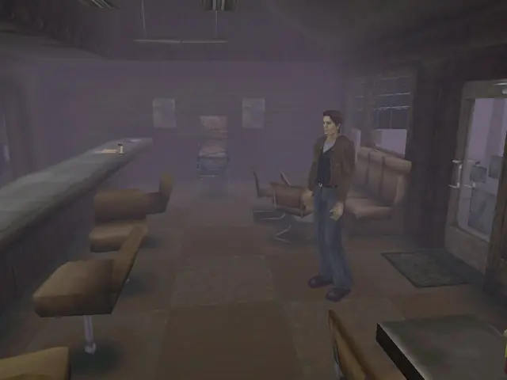

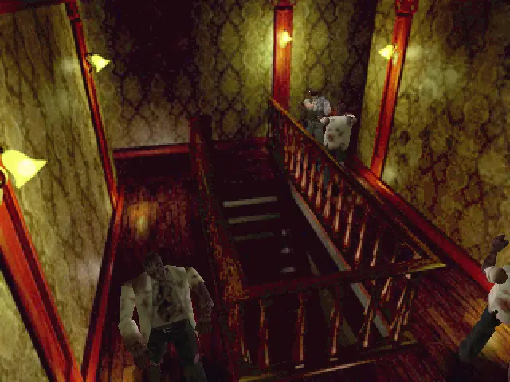

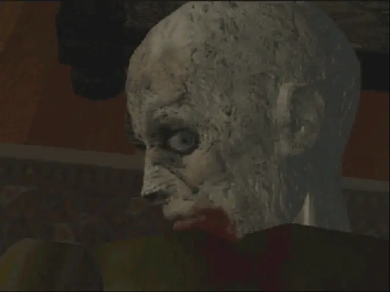

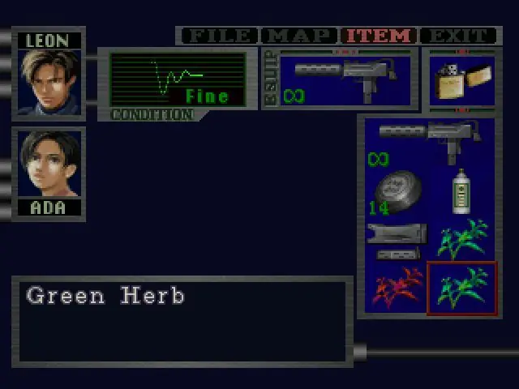

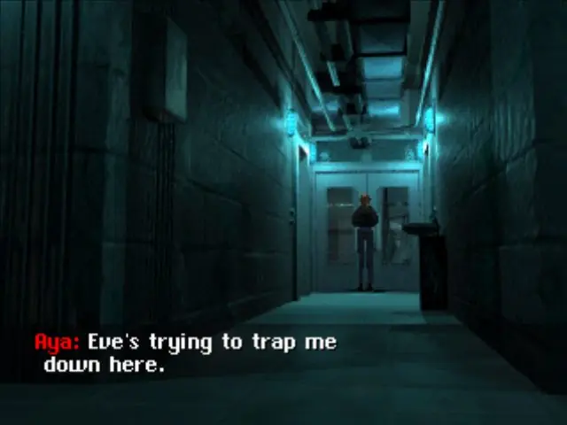

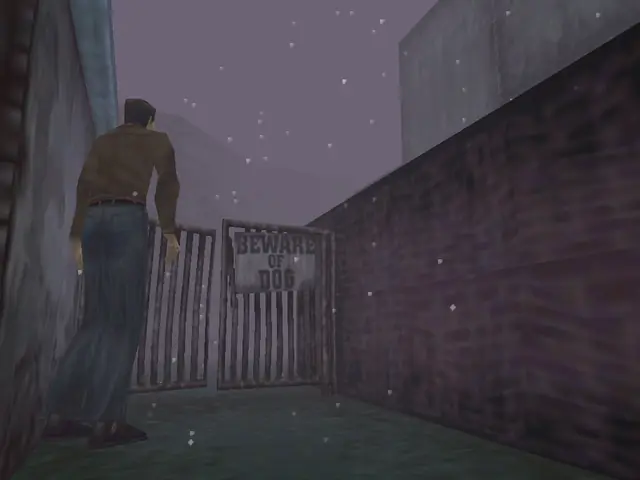

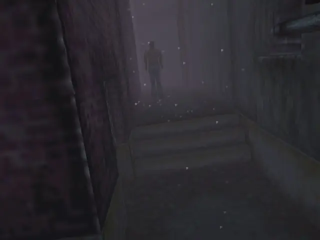

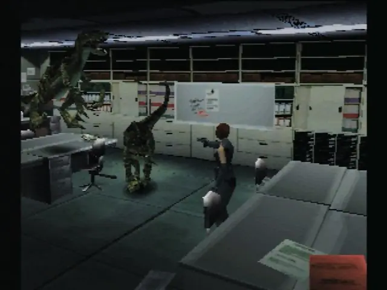

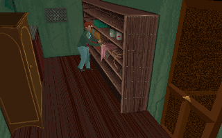

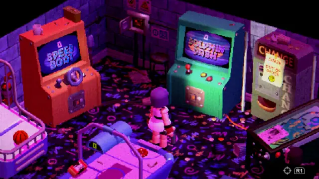

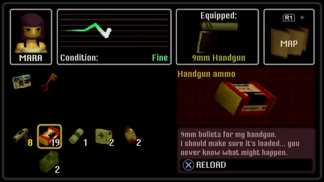

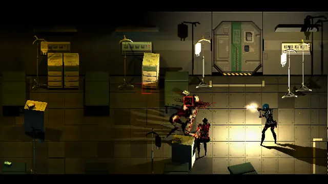
Games
- Silent Hill
How a short view distance became part of the fear.4 Study the fog, the radio and the rusted Otherworld.
- Resident Evil
Study the pre-rendered rooms, the fixed cameras5 and the typewriter saves.18
- Resident Evil 2
Twice the first game's camera cuts per room.13 Study the police station hall.
- Dino Crisis
Capcom's formula in real-time 3D, with scripted camera angles.3
- Parasite Eve
Square's blend of RPG and survival horror, set in realistic places made scary by their monsters.3
- Clock Tower
A point-and-click adventure with a stalker, Scissorman, who chases you through the game.3
- Alone in the Dark
Animated 3D characters over drawn backgrounds: the blend, and the controls, that Resident Evil borrowed.3
- Crow Country
Chunky characters, a camera you can turn and optional tank controls, with save rooms intact.9,2
- SIGNALIS
Study how it pairs low-poly 3D with sharp graphic design.
Film, art and more
- PlayStation
The console itself: why the limits are what they are.
- Jacob's Ladder
A visual parallel: study its rusted corridors and jerking, wrong movement.
- The Mist
Silent Hill's atmosphere echoes Stephen King, and this novella most of all.3
- Twin Peaks
A parallel for ordinary small towns that feel slightly wrong. Toyama names David Lynch's films among Silent Hill's inspirations.4
Sources
- 1Retro horror games are preparing to go beyond the PS1
- 2Crow Country: retro original PlayStation-era gameplay stylings meet modern horror
- 3IGN Presents the History of Survival Horror
- 4Silent Hill (World Video Game Hall of Fame)
- 5Resident Evil Creator Shinji Mikami Reflects on the Series’ Roots
- 6How a Love of Slashers, VHS, and Survival Horror Fuels the Work of Developer Puppet Combo
- 7PlayStation Architecture: A Practical Analysis
- 8How PlayStation Graphics & Visual Artefacts Work
- 9Indie devs discuss why low-poly works so well for horror: "I actually think those limitations encourage weird, unique compromises"
- 10Making Crash Bandicoot – part 3
- 11Interview with Keiichiro Toyama (PSM)
- 12Graphics Processing Unit (GPU)
- 13Resident Evil Director Explained How Simple Tricks Made Corners Work on PS1
- 14Multiple resolutions
- 15Render Texture
- 16Godot PSX Style Demo
- 17psx_base.gdshaderinc (Godot PSX Style Demo)
- 18Resident Evil save-room music is its own melancholy musical genre